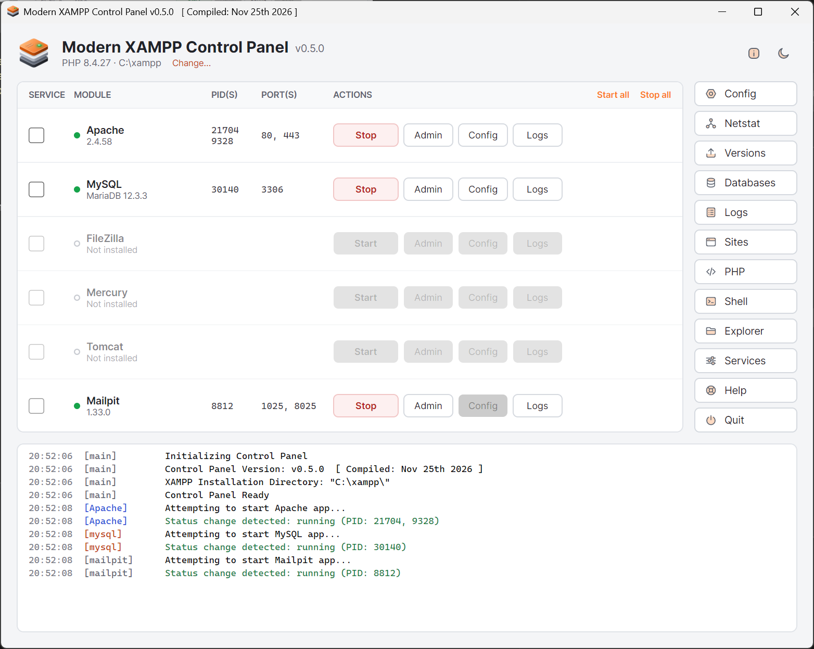

Modern XAMPP Control Panel
Modern XAMPP Control PanelThe control panel
XAMPP should have
shipped with.
PHP and MariaDB versions, HTTPS local sites, clean shutdowns. Open source, for Windows.

Modern XAMPP Control PanelPHP and MariaDB versions, HTTPS local sites, clean shutdowns. Open source, for Windows.